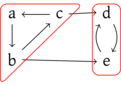

On présente ici trois algorithmes qui complètent les notions vue sen
première année :
- le calcul d’un arbre couvrant de poids minimal dans un graphe
pondéré
- le calcul des composantes fortement connexes dans un graphe
orienté
- une notion de couplages maximale qui est un cas particulier d’un
problème plus général de flot maximal
Arbre couvrant minimal
Présentation du problème
Description informelle : on a un ensemble de maisons reliées par es
routes, on cherche à poser des cables le long des routes pour que toute
paire de maison soit connectée. Quelle est la longueur minimale de cable
à utiliser ?
On comprend assez vite qu’il faut que les cables forment un graphe
connexe et que pour des questions de réduction de coût, on peut supposer
que les graphes sont acycliques. On cherche donc un arbre qui couvre
chaque maison dont la somme des poids des arrêtes, les longueurs des
cables, est minimale.
Soit
\(G = (S, A)\) un graphe non orienté
connexe on dit que
\(T \subset A\) est
un arbre couvrant de
\(G\) lorsque
:
- \(\forall x \in S, \exists a \in T, x \in
a\) : chaque sommet appartient à au moins une arête dans \(T\)
- \((S, T)\) est un arbre,
c’est-à-dire que c’est un sous-graphe acyclique et connexe
On notera ici \(\mathcal{T}(G)\)
l’ensemble des arbres couvrants de \(G\).
Une manière naturelle d’obtenir un arbre couvrant est de faire un
parcours quelconque ou de calculer les composantes connexes avec une
structure union-find. Dans ce dernier cas, comme le graphe est connexe,
on obtiendra directement un unique arbre dans la forêt qui est un arbre
couvrant. C’est l’ordre de traitement des arêtes qui va aiguiller vers
un arbre de \(\mathcal{T}(G)\) ou un
autre.
Soit
\(G = (S, A, w)\) un graphe non orienté
connexe et pondéré par
\(w : A \rightarrow
\R\), on note
\(w(T) = \sum_{a \in T}
w(T)\) le poids d’un arbre couvant de
\(G\).
Comme \(\mathcal{T}(G)\) est fini,
il existe, au moins, un arbre \(T_0\)
tel que \[
w(T_0) = \min_{T \in \mathcal{T}(G)} w(T)
\] On dit que \(T_0\) est un
arbre couvrant de poids minimal.
En anglais, on parle de minimum spanning tree.
Algorithme de Kruskal
Pour calculer un arbre couvrant de poids minimal, on va considérer le
calcul des composantes connexes avec une structure union-find mais en
traitant les arêtes dans l’ordre croissant de leurs poids : c’est
l’algorithme de Kruksal.
Un graphe non orienté pondéré connexe \(G =
(S, A, w)\).
- Pour chaque \(x \in S\)
- On trie \(A\) par ordre croissant
de poids.
- Pour chaque \(\{x, y\} \in A\) trié
- Si
find(x) \(\neq\)
find(y)
- Alors
union(x,y)
- On renvoie l’unique arbre de la forêt.
Correction de l’algorithme de
Krusal
On va montrer la correction d’une famille d’algorithme à laquelle
Kruskal appartient.
On dit
que \(T\) est une forêt minimale de
\(G\) s’il existe \(T'\) arbre couvrant de poids minimal de
\(G\) tel que \(T \subset T'\).
\(\emptyset\) est ainsi une forêt
minimale.
Soit
\(T\) une forêt minimale et \(a \in A\). On dit que \(a\) est une arête sûre si
\(T \cup \{ a\}\) est encore une forêt
minmale.
Soit \(T\) une forêt minimale qui
n’est pas un arbre couvrant, il existe une arête sûre \(a\) telle que \(T\cup \{a\}\) soit encore une forêt
minimale.
Preuve
Comme \(T\) est une forêt minimale, il existe \(T'\) arbre couvrant de poids minimal
tel que \(T\subset T'\). Comme
\(T\) lui-même n’est pas un arbre
couvrant, il existe \(a \in T' \backslash
T\). Ona alors \(T \cup \{ a\} \subset
T'\) donc \(a\) est une
arête sûre.
On en déduit un proto-algorithme de calcul d’un arbre couvrant de
poids minimal :
Un graphe non orienté pondéré connexe \(G =
(S, A, w)\).
- On pose \(T = \emptyset\)
- Tant que \(T\) n’est pas un
arbre-couvrant
- Déterminer une arête sûre \(a \in
E\)
- \(T := T \cup \{ a\}\)
- Renvoyer \(T\)
Cet algorithme renvoie un arbre couvrant de poids minimal.
Preuve
Cet algorithme vérifie directement
l’invariant suivant :
\(T\) est une
forêt minimale. En effet, le choix d’une arête sûre permet de prolonger
l’invariant.
Cet algorithme termine car il n’existe qu’un nombre fini d’arêtes à
ajouter et comme une arête sûre ne peut pas l’être une fois qu’on l’a
rajoutée, on ne peut pas faire plus d’itérations que le nombre
d’arêtes.
L’algorithme renvoie donc un arbre couvrant de poids minimal.
Il s’agit d’un proto-algorithme car la partie critique est de
déterminer une arête sûre et c’est la partie qui n’est pas explicitée
pour le moment.
Si \(F\) est une forêt minimale non
couvrante et \(e\) l’arête de plus
petit poids reliant deux arbres de \(F\), alors \(e\) est sûre pour \(F\).
Preuve
Comme
\(F\) est une forêt minimale, il existe
\(T\) arbre couvrant de poids minimal tel que
\(F \subset T\).
Soit \(e \in T\), auquel cas \(F \cup \{ e\} \subset T\) est encore iune
forêt minimale. Soit \(e \not \in T\)
et comme \(T\) est un arbre, \(T \cup \{e \}\) possède un cycle. On sait
que \(F \cup \{e\}\) est encore une
forêt, donc ce cycle contient nécessairement une arête \(e' \in T\backslash F\).
Par minimalité, \(w(e') \ge
w(e)\). Si on pose \(T' = (T
\backslash \{ e'\})\cup \{ e\}\) alors \(T'\) est un arbre couvrant car comme
l’ajout de \(e\) à \(T\) induit un cycle contenant \(e'\), les deux sommets de \(e'\) sont couverts par des arêtes dans
ce cycle prive de \(e'\). On en
déduit de même que \(T'\) est
connexe.
\(T'\) est nécessairement
acyclique car on a cassé le seul cycle contenu dans \(T \cup \{ e\}\) en enlevant \(e'\).
Reste que \(w(T') = w(T) - w(e')
+w(e) \le w(T)\) donc \(T'\)
est un arbre couvrant de poids minimal.
Ainsi \(F \cup \{ e \} \subset
T'\) est une forêt minimale et \(e\) est sûre.
Comme \(\emptyset\) est une forêt
minimale, on vient de valider l’invariant pour Kruskal qui est que la
forêt disjointe est une forêt minimale.
Kruskal renvoie un arbre couvrant de poids minimal.
Complexité de l’algorithme de
Kruskal
On peut décomposer l’algorithme :
- La création avec
makeset est en \(O(|S|)\)
- Le tri des arêtes est en \(O(|A| \log
|A|)\).
- La boucle est en \(O(|A|
\alpha(|S|))\) avec \(\alpha(|S|) =
o(\log |A|)\)
Comme \(G\) est connexe, on a \(|A| \ge |S|-1\) et ainsi \(|S| = O(|A|)\). Ainsi la complexité global
est en \(O(|A|\log |A|)\).
Kruskal fait partie de ces algorithmes qui sont linéaires après avoir
fait un tri. C’est un cas que l’on a déjà vu avec les algorithmes
gloutons. D’ailleurs, on peut dire que Kruskal est un choix glouton
d’arête sûre.
Prim ? TODO
Kosaraju et composantes fortement
connexes
Rappel des définitions
Soit \(G = (S,A)\) un graphe
orienté on note, pour \(x, y
\in S\), \(x\leadsto y\) quand
il existe un chemin dans \(G\) reliant
\(x\) à \(y\). On dit que \(y\) est accessible depuis \(x\).
On note \(x \leftrightarrow y \iff
x\leadsto y \wedge y \leadsto x\). C’est la restriction
symétrique de \(\leadsto\). Comme \(\leadsto\) est réflexive et transitive,
alors \(\leftrightarrow\) est une
relation d’équivalence. Les classes d’équivalences pour \(\leftrightarrow\) sont appelées les
composantes fortement connexes de \(G\). On les note \(CFC(G) = S / \leftrightarrow\).
Par exemple, sur le graphe :

On a les deux composantes fortement connexes \(\{a,b,c\}\) et \(\{d,e\}\).
On remarque une différence fondamentale avec les composantes
connexes, c’est qu’il peut il y avoir des arrêtes entre deux composantes
fortement connexes.
On cherche ici à déterminer un algorithme pour calculer les
composanges fortement connexes d’un graphe.
Exemple
TODO voir cours
Rappels sur le parcours en
profondeur
Comme on vient de le voir, le parcours en profondeur et ses temps
d’entrée et de sorties sont très importants ici. On va donc faire des
rappels sur ces notions.
On considère le programme suivant :
type statut = Inconnu | EnTraitement | Traite
type etat_dfs = {
statut : statut array;
mutable clock : int;
entree : int array;
sortie : int array
}
let tick etat =
let t = etat.clock in
etat.clock <- t+1;
t
let rec dfs ladj etat x =
if etat.statut.(x) <> Traite
then begin
etat.statut.(x) <- EnTraitement;
etat.entree.(x) <- tick etat;
List.iter (fun y ->
if etat.statut.(y) = Inconnu
then dfs ladj etat y) ladj.(x);
etat.sortie.(x) <- tick etat;
etat.statut.(x) <- Traite
end
let initialise_dfs ladj =
let n = Array.length ladj in
{
statut = Array.make n Inconnu;
clock = 1;
entree = Array.make n 0;
sortie = Array.make n 0
}
Le temps d’entrée est le moment où commence à traiter un sommet et
son temps de sortie est le moment où on a fini de le traiter car on a vu
tous ses descendants. On notera ici \(t_e(x)\) le temps d’entrée de \(x\) et \(t_s(x)\) son temps de sortie.
On
considère un DFS d’un graphe
\(G =
(S,A)\) et
\(x \in S\) découvert
par ce parcours.
Soit \(y \in S\), on dit que \(y\) est accesible par un chemin inconnu
depuis \(x\) s’il existe un chemin de
\(x\) à \(y\) ne passant que par des sommets de
statut Inconnu au moment où on lance le DFS en \(x\). On note \(x
\leadsto_I y\).
\(x \leadsto_I y\) si et seulement
si l’appel à DFS depuis \(x\) va
appeler DFS sur \(y\) avant de se
résoudre.
Preuve
*
\(\Rightarrow\)) : On va raisonner par
récurrence sur la longueur du chemin inconnu.
* Initialisation : si le chemin inconnu est vide, c'est direct.
* Hérédité : si $x \leadsto_I z \rightarrow y$ avec $y$ inconnu et l'hypothèse
de récurrence valide pour $x \leadsto_I z$ alors au moment
de l'appel au DFS sur $z$, on va forcément faire un appel au DFS sur $y$,
voisin inconnu de $z$.
- \(\Leftarrow\)) : si on considère
la chaîne des appels qui ont mené jusqu’à \(y\), vu la condition sur le statut, ce sont
nécessairement tous des sommets inconnus et ils forment un chemin, qui
est donc un chemin inconnu.
Soient \(x, y \in S\) tels que \(t_e(x) < t_e(y)\).
Si \(x \leadsto_I y\), alors \(t_f(y) < t_f(x)\).
Sinon, \(t_f(x) < t_e(y)\).
Autrement dit, soit \([t_e(y);t_f(y)]
\subset [t_e(x);t_f(x)]\), soit \([t_e(y);t_f(y)] \cap [t_e(x);t_f(x)] =
\emptyset\).
On dit que les temps sont bien parenthésés. En effet, si on considère
le mot sur \(S\) avec les lettres \((_x\) et \()_x\) pour chaque sommet \(x\) et tel qu’on écrive la lettre \((_x\) quand on note le temps d’entrée et
\()_x\) quand on note le temps de
sortie, alors ce mot est bien parenthésé.
Sur l’exemple du graphe précédent (TODO ref précise) on pourrait
avoir le mot \((_a(_b(_c(_d(_e)_e)_d)_c)_b)_a\).
Preuve
Comme
\(t_e(x) < t_e(y)\), c’est qu’on a
commencé le parcours en
\(x\) avant de
le commencer en
\(y\). i
\(x \leadsto_I y\) alors par le théorème
précédent, on appelle le DFS sur
\(y\)
depuis l’appel du DFS sur
\(x\), donc
le premier terminera avant le second et ainsi
\(t_f(y) < t_f(x)\).
Sinon, il n’est pas possible de rencontrer \(y\) en résolvant le DFS de \(x\), donc on aura forcément fini de traiter
\(x\) avant de commencer le parcours en
\(y\). Donc \(t_f(x) < t_e(y)\).
Soit
\(C \in CFC(G)\), on note
\[
t_e(C) = \min\enscomp{t_e(x)}{x \in C}
\] \[
t_f(C) = \max\enscomp{t_f(x)}{x \in C}
\]
On a alors une propriété de parenthésage des temps sur les
composantes fortement connexes elles-mêmes.
Soient \(C, C' \in CFC(G)\).
S’il existe \(x \in C, y \in
C'\) avec \(x \rightarrow
y\), alors \(t_f(C') <
t_f(C)\).
Preuve
On suppose qu’il existe
\(x \in C, y \in C'\) avec
\(x \rightarrow y\).
Premier cas, \(t_e(C) <
t_e(C')\). On considère \(u \in
C\) tel que \(t_e(C) = t_e(u)\).
On a alors forcément \(u \leadsto_I v\)
pour tout \(v \in C \cup C'\), en
passant par \(x \rightarrow y\). Ainsi
\(x\) finit son DFS après tous les
sommets dans \(C \cup C'\) donc
\(t_f(C) = t_f(x)
>t_f(C')\).
Second cas, \(t_e(C) >
t_e(C')\) si \(u \in
C'\) tel que \(t_e(u) =
t_e(C')\) alors on a visité tous les sommets de \(C'\) depuis \(u\), donc \(t_f(u) = t_f(C')\) et on n’a rencontré
aucun sommet de \(c\) car \(x \rightarrow y\) implique qu’il ne peut
exister une arête de \(C'\) vers
\(C\). On a bien \(t_f(C) > t_f(C')\).
Graphe miroir
Soit
\(G = (S,A)\) un graphe orienté, on
appelle graphe miroir de \(G\) le graphe \(G^R = (S,A^R)\) où \[
\forall x, y \in S, (x,y) \in A \iff (y,x) \in A^R
\]
Cela revient à renverser toutes les flèches du graphe \(G\).
Preuve
On remarque que la relation \(x \leftrightarrow_G y \iff x \leftrightarrow_{G^R}
y\). Les deux relations ont donc a fortiori les mêmes
classes d’équivalence.
Algorithme de Kosaraju
Un graphe orienté \(G = (S,A)\)
- On initialise l’état d’un DFS pour \(G\).
- Tant qu’il y a des sommets inconnus, on lance un DFS depuis un
sommet inconnu.
- On trie \(S\) par ordre
décroissant de temps de sortie.
- On initialise l’état d’un DFS pour \(G^R\).
- \(Comp \leftarrow \emptyset\)
- Tant qu’il y a un sommet inconnu \(x\)
- On lance un DFS dans \(G^R\) à
partir de \(x\) en notant les nouveaux
sommets traités dans la liste \(C\).
- \(Comp \leftarrow Comp \cup \{ C
\}\)
- On renvoie \(Comp\).
Preuve
Il suffit de montrer l’invariant
\(Comp \subset CFC(G)\) pour la
dernière boucle. Au départ, comme
\(Comp =
\emptyset\) il est trivialement vérifié et à la fin, comme on
aura traité tous les sommets, on aura nécessairement
\(Comp = CFC(G)\).
Supposons donc qu’on a \(Comp \subset
CFC(G)\) et qu’on relance un parcours dans \(G^R\) à partir de \(x\). On sait que la composante \(\overline{x}\) contenant \(x\) est forcément dans les sommets que l’on
va traiter : \(\overline{x} \subset
C\). Si, par l’absurde, il existe un sommet \(y \in C \backslash \overline{x}\), alors
\(y\) est dans une autre composante
\(\overline{y}\). On a traité \(y\) depuis \(x\), donc \(t_e(x) < t_e(y)\). Comme \(x \leadsto y\), on a par le théorème
précédent \(t_f(y) < t_f(x)\). On a
donc traité la composante \(\overline{y}\) dans un parcours précédent
et donc \(y\) est traité.
Contradiction.
La complexité de cet algorithme est dominée par les deux itérations
de DFS, on est donc en \(O(|S|+|A|)\).
Couplage maximal dans un graphe
biparti
Problème
Soit
\(G= (S,A)\) un graphe non orienté, on
appelle
couplage de
\(G\) une partie
\(C \subset A\) telle que
\(\forall e, e' \in C, e \cap e' =
\emptyset\).
On dit qu’un couplage est maximal pour \(G\) quand il est de cardinal maximal.
Rappel :
Soit
\(G= (S,A)\) un graphe non orienté, on
dit que \(G\) est
biparti lorsqu’il existe \(S_1, S_2 \subset S\) avec \(S_1 \cup S_2 = S\) et \(S_1 \cap S_2 = \emptyset\) et toutes les
arêtes relient un sommet de \(S_1\) et
un sommet de \(S_2\).
On se pose alors la question de déterminer un couplage maximal dans
un graphe biparti. C’est un problème classique d’appariement. On peut
ainsi citer le cas où on a des élèves et des écoles. On met une arête
entre un élève et une école quand les deux veulent de l’autre. Un
couplage maximal est alors une manière de placer le maximum d’élèves
dans une école.
Chemin augmentant
Soit
\(C\) un couplage d’un graphe et \(x\) un sommet. On dit que \(x\) est libre vis-à-vis de
\(C\) si \(x\) n’appartient pas à une arête de \(C\).
Soit
\(C \subset A\) un couplage d’un
graphe.
Un chemin de \(x\) à \(y\) composé des arêtes \((e_1,\dots,e_{2n+1})\) est dit
augmentant si les arêtes pairs \(e_{2i} \in C\), les arêtes impaires \(e_{2i+1} \not\in C\) et \(x\) et \(y\) sont libres pour \(C\).
Soit \(C, C'\) des couplages de
\(G = (S,A)\). On considère \(G' = (S, C \Delta C')\).
Les composantes connexes de \(G'\) sont :
- soit des sommets isolés
- soit des cycles de longueur paire alternant entre
arêtes de \(C\) et \(C'\)
- soit des chemins alternant entre \(C\) et \(C'\) ayant des extremités
distinctes.
Preuve
Il suffit de remarquer que les
sommets de
\(G'\) sont de degré au
plus 2 car ils sont de degré au plus 1 dans
\((S,C)\) et
\((S,C')\).
De plus, comme les arêtes d’un couplage ne peuvent avoir des
extrémités en commun un chemin devra forcément alterner entre arêtes de
\(C\) et de \(C'\). Les cycles sont donc
nécessairement de longueur paire.
(Bergé 1957) \(C\) n’a pas de chemin
augmentant, ssi \(C\) est un couplage
maximal.
Preuve
On va montrer la contraposée :
\(C\) non maximal ssi
\(C\) a un chemin augmentant.
\(\Leftarrow\)) Supposons que \(G\) dispose d’un chemin augmentant \(\varphi\), on considère \(C'\) différence symétrique de \(C\) et des arêtes dans \(\varphi\). Ainsi, \(C'\) contient les arêtes de \(\varphi\) qui ne sont pas dans \(C\), comme \(\varphi\) commence et finit avec des arêtes
qui ne sont pas dans \(C\), \(C'\) a une arête de plus que \(C\).
De plus, comme \(\varphi\) est
élémentaire et qu’ils relient deux sommets libres, on a l’assurance que
\(C'\) est un couplage. Ainsi \(C\) n’est pas maximal.
\(\Rightarrow\)) Supposons que \(C\) non maximal, il existe \(C'\) tel que \(|C'|>|C|\) et si on considère \(G' = (S, C \Delta C')\), il a une
composante qui contient au moins une arête de plus dans \(C'\) que dans \(C\). Ça ne peut donc être un cycle et c’est
un chemin qui est par construction augmentant pour \(C\).
Il s’agit ici d’un cas particulier du théorème de Bergé.
Déterminer un chemin augmentant
dans un graphe biparti
On considère ici un graphe biparti avec \(S
= S_1 \cup S_2\).
Pour déterminer un chemin augmentant pour \(C\), on considère une orientation des
arêtes \(\{x,y\}\) ainsi :
- \(x \rightarrow y\) si \(x \in S_2, y \in S_1\) et \((x,y) \in C\).
- \(y \rightarrow x\) sinon
On rajoute également deux sommets :
- un sommet source noté \(s\) avec
\(s \rightarrow x\) pour tout sommet
libre dans \(S_1\)
- un sommet but noté \(t\) avec \(x \rightarrow t\) pour tout sommet
libre dans \(S_2\).
On remarque qu’un sommet non libre \(y\) de \(S_2\) est nécessairement de degré 1 et avec
une arête \(y \rightarrow x\) où \(x\) non libre et \(\{x,y\} \in C\).
S’il existe un chemin de \(s \leadsto
t\) dans ce graphe orienté, alors il est de la forme :
\[s \rightarrow x_1 \rightarrow y_1 \dots
\rightarrow y_n \rightarrow t\]
avec :
- \(x_1\) libre dans \(S_1\)
- \(y_n\) libre dans \(S_2\)
- tous les autre \(x_i\) et \(y_j\) sont non libres (ok) et deux à deux
distincts (pas facile là !)
- \(\{x_i,y_i\}\not \in C\)
- \(\{y_i,x_{i+1}\} \in C\)
Le chemin est donc augmentant
Exercices
On considère un chemin entre deux sommets \(x\) et \(y\) dans un graphe non orienté pondéré. La
largeur de ce chemin est le plus petit poids des arêtes présentes dans
ce chemin. Le chemin vide de \(x\) à
\(x\) est de largeur \(+\infty\).
La distance de goulot d’étranglement entre \(x\) et \(y\) est la largeur maximale d’un chemin de
\(x\) à \(y\). S’il n’en existe pas, cette distance
est \(-\infty\).
- Prouver que l’arbre couvrant de poids maximal
contient les chemins les plus larges entre toute paire de sommets.
- Décrire un algorithme pour résoudre en temps \(O(|S|+|A|)\) le problème suivant : étant
donné un graphe non orienté pondéré \(G =
(S,A)\), \(x, y \in S\) et \(W \in \R\), est-ce que le distance de
goulot d’étranglement entre \(x\) et
\(y\) est inférieure ou égale à \(W\).
- On suppose que la distance de goulot d’étranglement entre \(x\) et \(y\) est \(B\).
- Prouver que la suppression d’une arête de poids inférieur à \(B\) ne change pas cette distance.
- Prouver que la contraction d’une arête de poids plus grand que \(B\) ne change pas cette distance. La
contraction d’une arête \((u,v)\)
revient à identifier \(u\) et \(v\), si cette contraction crée des arêtes
parallèles, on ne conservera que l’arête de plus grand poids.
Preuve
- On considère un arbre couvrant maximal \(T\) et deux sommets \(x,y\). Supposons par l’absurde que \(T\) ne contienne pas le chemin le plus
large de \(x\) à \(y\). On considère alors le chemin dans
\(T\) entre \(x\) et \(y\), son arête de plus petit poids est
\(e = \{ a, b\}\). On considère \(T' = T \backslash\{e\}\) qui n’est plus
connexe. Le chemin le plus large entre \(x\) et \(y\) contient ainsi forcément une arête
\(e'\not\in T'\) et on peut
considérer \(T' \cup \{e'\} =
T''\) qui est un arbre couvrant avec \(w(T'') = w(T) + w(e') - w(e) >
w(T)\) car \(w(e') \ge
\mathop{largeur} > w(e)\). Contradiction.
Travaux pratiques
Algorithme de Kosaraju et
2-SAT
Kosarau
On va considérer un type graphe où les sommets ne sont
pas forcément des entiers et où on peut stocke une table de hachage pour
faire la correspondance entre la valeur d'un sommet et son indice.
type 'a graphe = {
sommets : 'a array;
sommets_indices : ('a, int) Hashtbl.t;
ladj : int list array
}
Écrire une fonction qui étant donné un tableau t va
construire la table des associations t.(i) -> i qui
permettra ainsi de remonter du tableau à l'indice.
Note C'est le moment de retourner apprendre par
coeur la doc de OCaml https://v2.ocaml.org/api/Hashtbl.html
Preuve
let table_indices (t:'a array) : ('a, int) Hashtbl.t =
let h = Hashtbl.create (Array.length t) in
for i = 0 to Array.length t - 1 do
Hashtbl.add h t.(i) i
done;
h
Écrire une fonction indice qui prend un graphe et un
sommet et renvoie son indice en utilisant la table
sommets_indices.
Preuve
let indice g a = Hashtbl.find g.sommets_indices a
En déduire une fonction cree_graphe qui va prendre un
tableau sommets et créer un graphe sans arêtes dont ce sont
les sommets.
Preuve
let cree_graphe sommets =
{
sommets = sommets;
sommets_indices = table_indices sommets;
ladj = Array.make (Array.length sommets) []
}
Écrire une fonction ajoute_arete telle que
ajoute_arete g a b ajoute l'arête a -> b où
les sommets sont donnés par leur valeur et non pas par leur
indice.
Preuve
let ajoute_arete g a b =
let ia = indice g a in
let ib = indice g b in
if not (List.mem ib g.ladj.(ia))
then g.ladj.(ia) <- ib :: g.ladj.(ia)
Les deux cellules suivantes permettent de définir le graphe vu dans
le cours en exemple.
let ex_cours = cree_graphe [|'a';'b';'c';'d';'e';'f';'g';'h';'i';'j';'k';'l';'m';'n';'o';'p'|]
List.iter (fun (a,b) -> ajoute_arete ex_cours a b)
[('a','b'); ('b','f'); ('g','a');('f','g');
('c','h'); ('g','c'); ('d','c');('h','d');
('e','f'); ('f','l'); ('e','i'); ('g','k');
('h','l'); ('i','n'); ('j','m'); ('j','k');
('k','l'); ('k','h'); ('l','o'); ('l','p');
('m','i'); ('n','j'); ('n','o'); ('o','k')]
Écrire une fonction graphe_miroir qui renvoie le graphe
miroir du graphe donné, c’est-à-dire qui renverse toutes les arêtes.
Preuve
let graphe_miroir g =
let gr = {
sommets = g.sommets;
sommets_indices = g.sommets_indices;
ladj = Array.make (Array.length g.sommets) []
} in
for i = 0 to Array.length g.sommets - 1 do
List.iter (fun j -> gr.ladj.(j) <- i :: gr.ladj.(j)) g.ladj.(i)
done;
gr
Écrire une fonction dfs qui va parcourir en profondeur
un graphe et appliquer une fonction de post-traitement.
Pas besoin de noter les temps de sortie puisqu’ils correspondent au
moment où on effectue ce traitement.
Preuve
let rec dfs g trait visites x =
if not visites.(x)
then begin
visites.(x) <- true;
List.iter (fun y ->
if not visites.(y)
then dfs g trait visites y
) g.ladj.(x);
trait x
end
En déduire une fonction kosaraju qui renvoie un tableau
indiquant le numéro de la composante fortement connexe de chaque
sommet.
Attention, cette fonction va être un peu compliquée, on indique les
grandes lignes ici :
- on initialise un tableau de visites
- on va construire une liste
ordre des indices de sommets
rencontrés lors d'un premier DFS de tout le graphe grâce à un
post-traitement (avec une référence)
- on calcule \(G^R\) et on initialise
un tableau de visites
- on fait des DFS dans \(G^R\) mais
en prenant les sommets depuis la liste
ordre. En
post-traitement, on va remplir un tableau comp où
comp.(x) sera le numéro de la composante connexe de
x.
On commence par numéroter les composantes à 1.
Preuve
let kosaraju g =
let n = Array.length g.sommets in
let ordre = ref [] in
let visites = Array.make n false in
for i = 0 to n-1 do
if not visites.(i)
then dfs g (fun x -> ordre := x :: !ordre) visites i
done;
let gr = graphe_miroir g in
let visites = Array.make n false in
let ncomp = ref 0 in
let comp = Array.make n 0 in
List.iter (fun ia ->
if not visites.(ia)
then begin
incr ncomp;
dfs gr (fun x -> comp.(x) <- !ncomp) visites ia
end
) !ordre;
comp
Cette représentation des composantes va nous être utile mais elle
n’est pas très maniable. Écrire une fonction listes_comp
telle que listes_comp sommets comp renvoie le tableau des
composantes données sous forme de listes de sommets.
Preuve
let listes_comp sommets comp =
let n = Array.fold_left max 0 comp in
let comp_l = Array.make n [] in
for i = 0 to Array.length comp - 1 do
let n = comp.(i) in
comp_l.(n-1) <- sommets.(i) :: comp_l.(n-1)
done;
comp_l
On va résoudre 2-SAT en utilisant l’algorithme de Kosaraju. Tout
d’abord on rappelle que les formules de 2-SAT ne comportent que deux
littéraux dans chaque clause.
Exemple : \(f = (a \vee \neg b) \wedge
(\neg a \vee b) \wedge (\neg a \vee \neg b) \wedge (a \vee \neg
c)\)
On reprend un type proche de ce qui a été fait l'an dernier, sauf que
les clauses sont des couples de littéraux.
type lit = Pos of char | Neg of char
type clause = lit * lit
type formule = clause list
La formule donnée au dessus s'écrit alors :
let f = [ (Pos 'a', Neg 'b'); (Neg 'a', Pos 'b'); (Neg 'a', Neg 'b'); (Pos 'a', Neg 'c') ]
Écrire une fonction label : lit -> char qui renvoie
l'étiquette d'un littéral et une fonction
neg : lit -> lit qui renvoie le littéral opposé d'un
littéral donné.
Preuve
let label = function Pos a | Neg a -> a
let neg = function Pos a -> Neg a | Neg a -> Pos a
Écrire une fonction variables qui renvoie les étiquettes
de tous les littéraux sans répétitions. On pourra
utiliser List.sort_uniq Stdlib.compare.
Preuve
let rec variables f =
let rec var_aux f =
match f with
| [] -> []
| c::f' -> var_clause c @ var_aux f'
and var_clause (l1,l2) = [label l1; label l2]
in List.sort_uniq Stdlib.compare (var_aux f)
On peut écrire \(a \vee b\) sous la
forme implicative \((\neg a \rightarrow b)
\wedge(\neg b \rightarrow a)\).
En faisant cela, on peut alors construire un graphe sur les littéraux
où \(l \rightarrow l'\) quand cette
implication apparait dans la formule.
La formule \(f\) donne alors le
graphe d'implication suivant :

Écrire une fonction implication_graphe qui étant donnée
f renvoie ce graphe.
Preuve
let implication_graphe f =
let v = variables f in
let s = List.concat (List.map (fun x -> [Pos x; Neg x]) v) in
let sommets = Array.of_list s in
let g = cree_graphe sommets in
List.iter (fun (a,b) ->
ajoute_arete g (neg a) b;
ajoute_arete g (neg b) a
) f;
g
On cherche alors une valuation des variables qui soit telle qu'il n'y
ait pas une arête \(\top \rightarrow
\perp\) entre un littéral vrai et un littéral faux. En effet,
toutes les autres affectations vérifieront la clause correspondante.
Ainsi, tous les littéraux d'une composante fortement connexe doivent
nécessairement avoir la même valeur de vérité. Si \(C \rightarrow C'\) pour deux
composantes, on ne peut pas affecter la valeur vraie à \(C\) et fausse à \(C'\). On remarque que le graphe est
symétrique par contraposition, donc il existe une composante niée \(\neg C\) pour chaque composante \(C\).
L'idée pour résoudre 2-SAT est donc de calculer les compoantes
fortement connexes et de remonter leur DAG en affectant vraie à la
première composante rencontrée entre \(C\) et \(\neg
C\).
Pour résoudre 2-SAT, on va appliquer Kosaraju sur le graphe
d'implication de la formule.
Exemple pour \(f\) :

kosaraju (implication_graphe f)
Sur ce graphe on remarque que si deux littéraux opposés sont dans la
même composante fortement connexe, alors la formule est insoluble. Si ce
n'est pas le cas, on peut démontrer que la valuation suivante fonctionne
:
\[\forall a \in V, v(a) = \begin{cases}
\top & \text{si } comp(a) > comp(\neg a) \\
\perp & \text{sinon }\end{cases}\]
Cette affirmation repose sur deux propriétés :
- les composantes sont numérotées dans l'ordre croissant du tri
topologique de leur DAG (graphe acyclique orienté)
- le graphe d'implication possède une symétrie par contraposition : si
\(a_1 \rightarrow a_2 \dots \rightarrow
a_n\) alors \(\neg a_n \rightarrow \neg
a_{n-1} \dots \rightarrow \neg a_1\).
En déduire une fonction resout_2sat qui étant donné une
formule renvoie None si elle est insoluble, et
Some l où l est une liste de couples
(variable,valeur) représentant une valuation solution.
Preuve
let resout_2sat f =
let g = implication_graphe f in
let comp = kosaraju g in
let n = Array.length g.sommets / 2 in
let valuation = ref [] in
let insoluble = ref false in
for i = 0 to n-1 do
let a = label g.sommets.(2*i) in
if comp.(2*i) = comp.(2*i+1)
then insoluble := true;
done;
if !insoluble
then None
else Some !valuation
Couplage maximal dans un graphe
biparti
Graphe biparti
On va considérer ici un graphe biparti donné par une liste d’arêtes
sous la forme (source,but). Voici un exemple :
[ (0,3); (1,3); (1,4); (2,3); (2,4) ]
En commençant à numéroter à 0, on peut donc supposer que le nombre de
sommets est égal au plus grand entier apparaissant dans un couple plus
un.
Écrire une fonction
nombre_sommets : (int * int) list -> int qui calcule ce
nombre.
Preuve
let rec nombre_sommets l =
match l with
| [] -> 0
| (a,b)::q -> let n = nombre_sommets q in
max (1 + max a b) n
On va maintenant récupérer la liste des premières composantes et la
liste des secondes composantes sans répétition.
Pour cela, on commence par écrire une fonction permettant de réaliser
t :: q en omettant t en cas de répétition.
Écrire une fonction
cons_uniq : 'a -> a list -> 'a list telle que
cons_uniq t q renvoie t::q si t
n’est pas dans liste q et q sinon.
Preuve
let cons_uniq t q =
if List.mem t q
then q
else t::q
Écrire une fonction
separe_liste : (int * int) list -> int list * int list
qui prend en argument une liste de couple d’entiers et renvoie le couple
des listes sans répétitions des premières et secondes
composantes.
Preuve
let rec separe_liste l =
match l with
| [] -> [], []
| (a,b)::q -> let l1, l2 = separe_liste q in
(cons_uniq a l1, cons_uniq b l2)
Écrire une fonction
intersection : 'a list -> 'a list -> 'a list qui
prend en arguments deux listes sans répétitions et renvoie une liste
contenant les éléments présents dans les deux listes.
Preuve
let rec intersection l1 l2 =
List.filter (fun x -> List.mem x l2) l1
En déduire une fonction
biparti : (int * int) list -> bool qui vérifie qu’une
liste d’arêtes permet effectivement de représenter un graphe biparti où
les sommets sont d’un côté les premières composantes et de l’autre les
secondes.
Preuve
let biparti l =
let l1, l2 = separe_liste l in intersection l1 l2 = []
De cette liste d’arêtes représentant un graphe biparti à \(n\) sommets, on va en déduire le graphe
lui-même en le représentant sous la forme d’un couple
(ladj, sources) où ladj est une représentation
en liste d’adjacences et sources est un tableau de booléen
indiquant si un sommet appartient à la première composante du graphe
biparti, i.e. à la première composante d’un des couples d’arêtes.
Ainsi, les sommets qui n’apparaissent pas dans les arêtes sont
associés implicitement à la seconde composante, ce qui ne sera pas
gênant dans la suite.
Écrire une fonction
graphe_aretes : (int * int) list -> int list array qui
renvoie le tableau des listes d’adjacence d’un graphe non
orienté donné sous la forme d’une liste d’arêtes.
Preuve
let graphe_aretes l =
let n = nombre_sommets l in
let ladj = Array.make n [] in
List.iter (fun (a,b) ->
ladj.(a) <- b :: ladj.(a); ladj.(b) <- a :: ladj.(b)) l;
ladj
En déduire une fonction
graphe_biparti : (int * int) list -> int list array * bool array
qui renvoie le couple (ladj, sources) représentant le
graphe biparti.
Preuve
let graphe_biparti l =
let g = graphe_aretes l in
let s1, _ = separe_liste l in
let sources = Array.make (Array.length g) false in
List.iter (fun i -> sources.(i) <- true) s1;
g, sources
Couplage maximal
On va programmer l’algorithme pour déterminer un couplage maximal par
des bascules successives de chemins augmentant (voir preuve du théorème
de Bergé).
On va adopter deux représentations d’un couplage. La représentation
élémentaire comme sous-liste de la liste d’arêtes du graphe.
Par exemple [ (0,3); (1,4) ] est un couplage pour la
liste d’arêtes données plus haut.
Écrire une fonction est_couplage : int list -> bool
qui vérifie si une liste d’arêtes est un couplage en vérifiant qu’il n’y
a pas d’arêtes coincidentes.
Votre fonction devra être de complexité
linéaire.
Preuve
let est_couplage el =
let n = nombre_sommets el in
let libres = Array.make n true in
let couplage = ref true in
List.iter (fun (x,y) ->
couplage := !couplage && libres.(x) && libres.(y);
libres.(x) <- false; libres.(y) <- false) el;
!couplage
L’autre représentation est un tableau indiquant pour un sommet \(i\), soit Some j quand on a
une arête \(\{i,j\}\) dans le couplage
et None sinon. En effet, un couplage réalise une fonction
partielle involutive de \(A \rightarrow
A\).
Ainsi, le tableau
[| Some 3; Some 4; None; Some 0; Some 1 |] permet de
représenter le couplage [ (0,3); (1,4) ] en considérant que
les sommets sont dans \([|0;4|]\).
Écrire des fonctions permettant de passer d’une représentation à une
autre :
couplage_liste_vers_tab : (int * int) list -> int option arraycouplage_tab_vers_liste : bool array -> int option array -> (int * int) list
ici, on a besoin de connaitre les sources pour choisir comment placer
les arêtes.
Preuve
let couplage_liste_vers_tab l =
let n = nombre_sommets l in
let couplage = Array.make n None in
List.iter (fun (a,b) ->
couplage.(a) <- Some b;
couplage.(b) <- Some a) l;
couplage
let couplage_tab_vers_liste sources couplage =
let cpl_aretes = ref [] in
let n = Array.length sources in
for i = 0 to n-1 do
if sources.(i)
then match couplage.(i) with
| None -> ()
| Some j -> cpl_aretes := (i,j) :: !cpl_aretes
done;
!cpl_aretes
On va définir ici le graphe résiduel associé à un couplage de manière
implicite avec une fonction permettant de décider si une arête \(x \rightarrow y\) est dans le graphe
résiduel.
Attention il peut il y avoir des arêtes \(x \rightarrow z\) quand \((x, y)\) est dans le couplage.
Écrire une fonction
arete_residuelle : bool array -> int option array -> int -> int -> bool
qui permet, en appeleant
arete_residuelle sources couplage x y permet de décider si
\(x \rightarrow y\) est dans le graphe
résiduel.
Preuve
let arete_residuelle sources couplage x y =
if sources.(x)
then couplage.(x) <> Some y
else couplage.(x) = Some y
Pour chercher un chemin augmentant, on va commencer par effectuer un
parcours en profondeur récursif dans un graphe avec une notion d’arête
implicite, une fonction comme arete_residuelle, et on va
remplir un tableau de prédécesseur où \(x\) est le prédécesseur de \(y\) si c’est le DFS depuis \(x\) qui a appelé le DFS depuis \(y\).
Dans toute la suite, on suppose que le prédécesseur de \(x\) est \(x\) lui-même quand on a lancé le DFS
initialement depuis le sommet \(x\).
Écrire une fonction
dfs : int list array -> (int -> int -> bool) -> int option array -> int -> unit
telle que dfs g est_arete pred x effectue un DFS depuis
le sommet x dans le graphe donné sous forme de listes
d’adjacence par g, avec une fonction est_arete
permettant de tester si une arête est à considérer dans le parcours et
en remplissant le tableau des prédécesseurs pred, qui est
un int option array car la valeur vaut None
tant que le sommet n’est pas découvert.
Rappel : on a spécifié que pred.(x) valait
Some x si x était un des sommets initiaux sur
lesquels on a commencé le DFS.
Preuve
let rec dfs_impl g est_arete pred x =
List.iter (fun y ->
if pred.(y) = None && est_arete x y
then begin
pred.(y) <- Some x;
dfs_impl g est_arete pred y
end)
g.(x)
Écrire une fonction
remonte : int option array -> int -> int list
telle que remonte pred x renvoie la liste des sommets
allant du point de départ d’un DFS ayant rempli pred
jusqu’à x en remontant la relation de prédecesseurs.
Preuve
let remonte pred x =
let rec aux pred y acc =
match pred.(y) with
| None -> failwith "Impossible"
| Some x when x = y -> y::acc
| Some x -> aux pred x (y::acc)
in
aux pred x []
On considère qu’on a effectué un DFS dans le graphe résiduel associé
à un couplage depuis un sommet et on cherche maintenant à écrire une
fonction qui permet déterminer s’il existe un chemin depuis ce sommet
vers un sommet libre dans les cibles, i.e. les sommets
qui ne sont pas des sources.
Écrire une fonction
cherche_chemin : int option array -> bool array -> int option array -> int -> int list option
telle que cherche_chemin pred sources couplage depart
renvoie Some phi si phi est la liste des
sommets visités dans un chemin du graphe résiduel de depart
un sommet cible libre pour couplage et
None sinon.
Preuve
let cherche_chemin pred sources couplage depart =
let rec aux i =
if i = Array.length sources
then None
else if not sources.(i) && couplage.(i) = None
&& pred.(i) <> None
then let phi = remonte pred i in
if List.hd phi = depart
then Some phi
else aux (i+1)
else aux (i+1)
in
aux 0
Écrire une fonction
chemin_augmentant : int list array -> bool array -> int option array -> int -> int list option
telle que chemin_augmentant g sources couplage depart
renvoie Some phi où phi est la liste des
sommets d’un chemin augmentant issu de la source depart (et
donc arrivant nécessairement dans un sommet cible
libre).
Preuve
let chemin_augmentant g sources couplage depart =
let n = Array.length g in
let pred = Array.make n None in
pred.(depart) <- Some depart;
dfs_impl g (arete_residuelle sources couplage) pred depart;
cherche_chemin pred sources couplage depart
Écrire une fonction
bascule_chemin : int option array -> int list -> unit
telle que bascule_chemin couplage chemin où
chemin est un chemin augmentant pour le couplage, va faire
la bascule de toutes les arêtes de chemin : celles dans le
couplage sont enlevées et celles qui n’y sont pas sont rajoutées.
Indice : seule la parité permet de déterminer celles
qui y sont dans la mesure où on a un chemin augmentant.
Preuve
let rec bascule_chemin couplage chemin =
match chemin with
| s::t::q -> couplage.(s) <- Some t; couplage.(t) <- Some s; bascule_chemin couplage q
| [] -> ()
| [_] -> failwith "Le chemin est forcément de longueur impaire"
En déduire une fonction,
couplage_maximal : (int * int) list -> (int * int) list
telle que couplage_maximal aretes, où
aretes est un graphe biparti donné sous forme d’une liste
d’arêtes, renvoie un couplage maximal sous la forme d’une liste
d’arêtes.
Pour cela, on va itérer sur chaque sommet source en cherchant un
chemin augmentant depuis celui-ci et en le basculant. Quand on aura
traité toutes les sources, on est certain qu’il n’y a plus de chemin
augmentant.
Preuve
let couplage_maximal l =
let g, sources = graphe_biparti l in
let n = Array.length g in
let couplage = Array.make n None in
for i = 0 to n-1 do
if sources.(i) && couplage.(i) = None
then match chemin_augmentant g sources couplage i with
| None -> ()
| Some ch -> bascule_chemin couplage ch
done;
couplage_tab_vers_liste sources couplage

 Marc de Falco
Marc de Falco